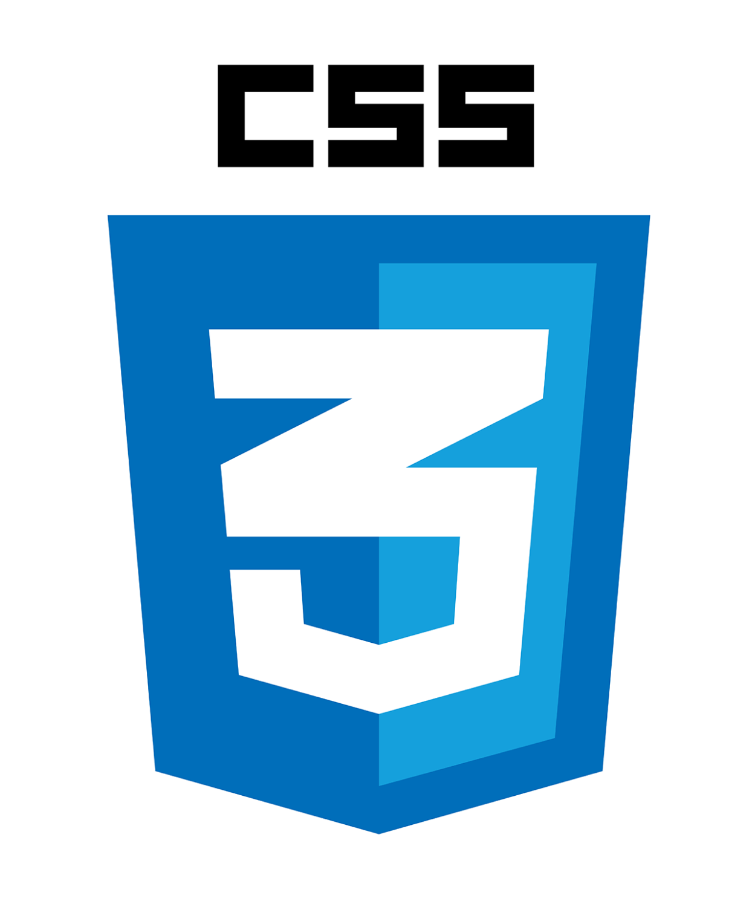

About Me!
Hi!, it's me Sofiane Berkkari let me tell you about me..
BIO
I am an IT professional in network administration and system knowledgeable in networking infrastructure hardware software repair and system troubleshooting and monitoring, and I am also in programming and Web development as a Front-End developer with languages like Python, JavaScript, HTML5, CSS3, and other Dev tool I love to spend my free time to write code and to learn new concepts and technologies this is my passion.
Experience
Costumor Service | IT Support
Telecommunication Services, Laghouat, AFlou
- Answering customer inquiries through telephone and managing customers documents.
- Solving technical and general issues of the customers.
IT Technician | Helpdesk
Schneider Electric, EgyTech, Sidi Bel Abbess
- Responsibilities for installation, maintenance and provision of daily support both hardware and software.
- Worked closely with other team members and supporting teams in resolving open issues.
IT Technician
PC-STAR , Sidi Bel Abbess
- Responsibilities for developing and providing support hardware software application emails, printers and network related issues.
- Responsible for bulid desktop installing OS and related software hardware installation and maintenances.
2015/2016
Certification
Cisco System
Cisco Certified Entry Networking Technician
2018/12
Cisco System
Cisco Certified Network Associate, Routing & Switching
2019/06
Juniper Networks
Juniper Networks Certified Associate, Cloud
2019/09
Juniper Networks
Juniper Networks Certified Associate, DevOps
Google Digital Marketing and Media Foundations Certification
Udacity & One Million Arab Coders Initiative
Web Full Stack Development Track
Education
ICT-TOWERS
Information Communication Technologies Institute
- Accomplishment of professional training courses Interconnecting Cisco Networking Devices part 1 ICND1 Certifcation of completion the courses.
- Accomplishment of professional training courses Interconnecting Cisco Networking Devices part 2 ICND2 Certifcation of completion the courses.
- Accomplishment of Associate Security (Implementing Cisco Network Security, IINS)
Cisco Networking Academy & Juniper Junos Genuis
Cisco Certified Network Associate, Routing & Switching
- Basics and fundamental of computer networking.
- TCP/IP , OSI Model, Topology, Design, Ethernet, LAN, WAN.
- Addressing Subnetting IPV4, IPV6.
- VLAN, TRUNK, DTP, VTP, STP, RIPv2, OSPF, EIGRP, VPN.
- Automation, XML, API, NETCONF, Python, JSON, YAML.
Udacity & Exd
Full Stack Development track & Automation
- Accomplishment of part one core fundamental HTML5, CSS3.
- Accomplishment of part two fundamental and basic of Python3.
- Microsoft course introduction to Python fundamental.
Skills
